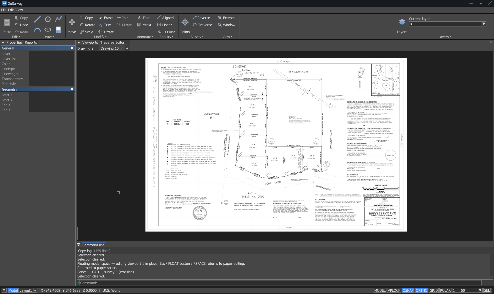
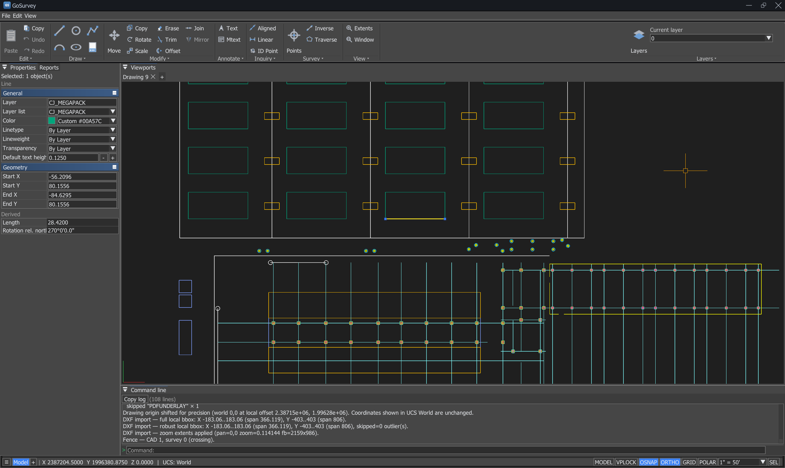
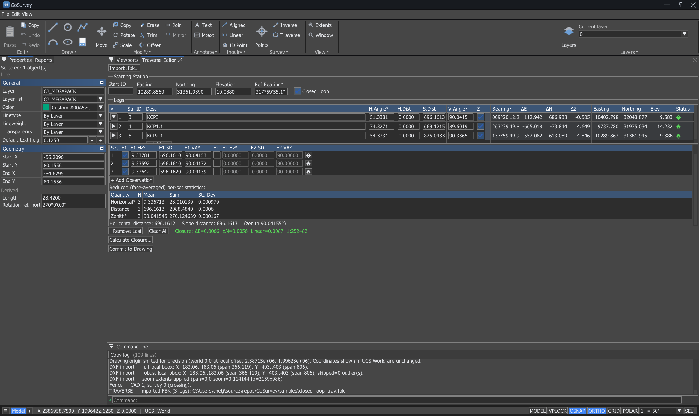
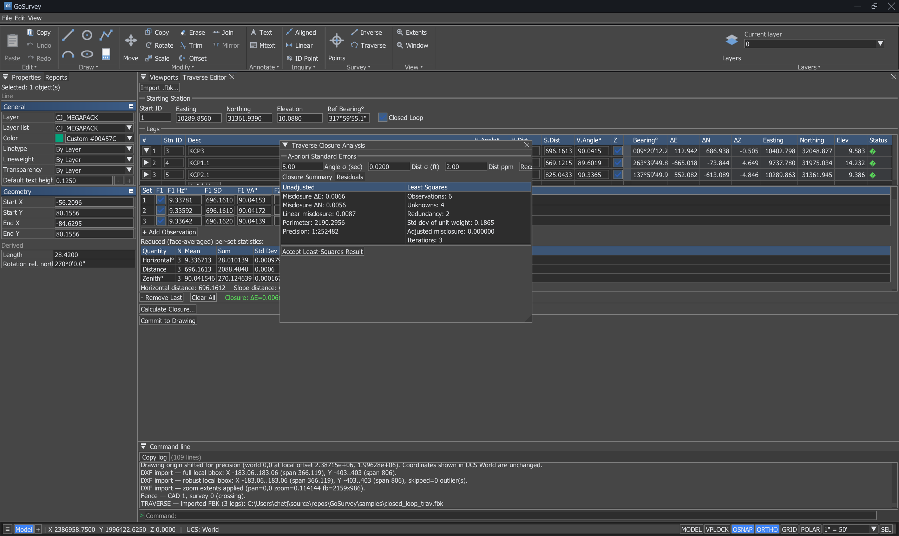

Bearings and distances
Enter geometry the way it is written: quadrant bearings, azimuths, DMS or decimal. Direct-distance entry, ortho, and relative @dx,dy chaining.
LINEPLINEUNITS
A fast, modern CAD platform built for surveyors — bearings and distances, traverse adjustment, points, surfaces, and plottable sheets.

Type a command, or use the ribbon. Every readout follows the units and bearing format you set once.
Enter geometry the way it is written: quadrant bearings, azimuths, DMS or decimal. Direct-distance entry, ortho, and relative @dx,dy chaining.
Reduce raw face 1 / face 2 observations, review per-leg statistics, and run a weighted least-squares closure with per-observation residuals to find the blunder.
Create, view and edit points with descriptions and elevations. Import and export PNEZD CSV. Points survive a DXF round trip with their numbers and descriptions intact.
Build a TIN from your shots to model existing ground, with breaklines and boundaries. Contours, elevation and slope banding, slope arrows, and cut/fill volumes.
Move a local-coordinate job onto real-world coordinates with a Helmert fit. Add control pairs, inspect the residuals, drop the outliers, then apply.
Paper-space layouts with scaled viewports, per-viewport layer freeze and colour overrides, then plot single sheets or a whole set to vector PDF at true scale.
Attach a recorded plan as a reference and snap directly to the geometry you can see in it — endpoints, intersections and centres detected from the page itself.
Import and export DXF, open DWG drawings, and bring in 3D models via glTF or STL when you need context around the survey.
Named text styles, a WYSIWYG MTEXT editor with a formatting panel, dimensions, hatching, and true-scale annotation sized off each viewport.



Once installed, GoSurvey checks for new versions itself and asks before installing anything. Choose your channel in Settings → System → Updates.
Tested releases. This is the one to install if you are doing real work.
Windows may warn that the publisher is unrecognised — the installer is not code-signed yet. Choose More info → Run anyway. A SHA-256 checksum is published with every release.
The next release, published as it is built. Real working builds, but this is where problems are still being found — keep backups of drawings you care about.
Already running GoSurvey? Turn on Include beta releases in Settings instead of downloading by hand.
No beta build is published at the moment — the stable release above is the current one.
Live release details could not be loaded just now. Browse all releases on GitHub →
Download the installer above and run it. GoSurvey installs to Program Files and adds a Start Menu entry. If it will not start, install the Microsoft Visual C++ Redistributable for x64.
Run UNITS once and pick the precision and bearing format you work in — surveyor's bearings, DMS or decimal. Every readout and label follows it.
Import points from a PNEZD CSV, linework from DXF, or raw observations from an FBK file into the Traverse Editor. Either order keeps your points.